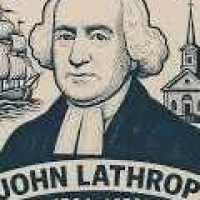
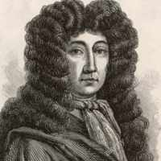

Family histories publish what survived. This is the other half — every
claim this record considered and threw out, every portrait that turned out to be
somebody else, and every question still open. 25 entries, each with where it came
from and how it fell.
Nothing on this page is on the main record
25Entries
13Rejected outright
4Wrong faces
11Still open
Rejected
People who are not ancestors
Names that attach themselves to a tree because they are famous, or because the spelling matched.
Jesse Linton's relationship
Rejected
The claim
Jesse Linton, who follows Robert in the Pawtucket Band conductor list, was his brother.
Where it came from
Family understanding, and the adjacency of the two names in the conductor list.
How it was ruled out
Robert's siblings are named on his memorial as Janette, James and Hugh Jr. No Jesse. The lifetime sketch independently names the brothers in the firm as Hugh and James with Edward Jollie a fourth partner. Jesse is not among the children recorded either, though only four of nine appear there.
What is still open
He belongs to the family somewhere: a Jesse Linton is assistant treasurer of the Pawtucket Glazed Paper Company in 1917. He is not among the children recorded on the memorial either, though only four of nine appear there. Nephew or unlisted son both remain possible.
Two attached sources place him at Yarmouth, Nova Scotia during the Revolution.
Where it came from
Two of the 42 sources on his profile: Poole's Annals of Yarmouth and Barrington in the Revolutionary War (1899), and a Yarmouth genealogy of the Nehemiah Porter family.
How it was ruled out
Poole's Annals is a genuine primary compilation, but its petitioner describes himself as a native of Salem who afterwards resided at Woburn, with a wife and five children. Ours was at Ipswich: his children were born there in an unbroken line through 1774, 1776, 1778, 1780 and 1784. A different Ebenezer Porter.
Why it matters
Two of his forty-two sources belong to someone else. Source counts measure attention, not accuracy — and a high count can carry a wrong-person attachment for years without anyone noticing.
Anne Bradstreet, first poet published in North America, is a direct ancestor.
Where it came from
Her father Thomas Dudley is a direct ancestor, and the inference is the obvious one.
How it was ruled out
The descent runs through her younger sister Mercy Dudley, who married Rev. John Woodbridge. Anne Bradstreet is the sister of a direct ancestor, not an ancestor.
Captain John Knight Jr (1626–1677) of Newbury held the rank of captain.
Where it came from
The rank appears in his name on the FamilySearch tree, where he carries 116 sources.
How it was ruled out
The Newbury records give him as constable in 1654, sergeant of the military company in 1666 and its ensign in 1669 — no captaincy. None of his 116 sources is a military record; they are vital records, deeds, probate and a census. He died 7 February 1677, after the Massachusetts fighting had ended. The title looks inflated, in the same way two men both appear as "Lieut. John Porter".
Stephen Fay, Paul Plumer, Johannes Peter Ritter and two Riemensnyder women were presented on the record as ancestors.
How it was ruled out
None is a lineal ancestor. Their marriages form orphan couples in the edge graph — no parent edge above, no child edge below — while a sibling of theirs carries the line. Ruth Child, whom Fay married, shares both parents and nine siblings with the direct ancestor Prudence Child. Paul Plumer is a brother of the ancestor Jonathan Plumer. The two Riemensnyder women are sisters of the ancestor Maria Dorothea Riemensneider, and Ritter married one of them. An audit of all 85 people named on the record found these five and no others.
None were removed. Each is now labeled collateral where they appear, because an aunt who died at Oriskany is still family — she is just not an ancestor, and the record should not blur the two.
Sources
Ruled out by:Local edge graph of the FamilySearch mirror · Derived from fs_couples / fs_edges · 2026 · orphan-couple audit, generation 8
Rejected
Impossible dates
Deaths recorded in colonies that did not exist yet. Excluded from the westward-drift analysis on the main record.
Two deaths in colonies that did not exist
Excluded
The claim
Two recorded deaths: Massachusetts 1605 and Connecticut 1602.
Where it came from
The collaborative tree, at the fourteenth and twelfth generations.
How it was ruled out
Plymouth was founded 1620, Massachusetts Bay 1630, the Connecticut Colony 1636. Both excluded from the westward-drift analysis.
Costume dates a picture. Three of these were ruled out on the wig alone, and one on the shape of a dress.

Circulated as John Lothropp, d. 1653.

Circulated as Thomas Dudley, d. 1653.Attached to five of the nine passengers.
The Dudley engraving
Not him
The claim
The circulating engraving is a likeness of Thomas Dudley.
Where it came from
Genealogy sites, attached to his profile.
How it was ruled out
It shows a full-bottomed periwig, a fashion that arrived with Charles II after 1660. Dudley died in 1653.
The Lothropp badge
Not him
The claim
The circulating badge is a likeness of Rev. John Lothropp.
Where it came from
Genealogy sites, attached to his profile.
How it was ruled out
The powdered wig and preaching bands are eighteenth-century, a hundred years after he died in 1653. The subject is now identified: it is Rev. John Lathrop, D.D. (1740-1816), minister of Boston's Second Church for forty-eight years — and John Lothropp's own great-great-grandson. A descendant's likeness drifted up the tree onto the ancestor who shared his name, and propagated from there.
Why it spread
The two men are four generations and a spelling apart, and both were ministers called John Lathrop. Nearly every wrong portrait in a family history was once a right portrait of somebody else.
The Mayflower Society emblem
Not him
The claim
Images presented as likenesses of Mayflower passengers.
Where it came from
Genealogy sites, which attach the identical file to five of the nine.
How it was ruled out
It is the General Society of Mayflower Descendants emblem, the identical file attached to five of the nine. No likeness of any of the nine survives.
A studio photograph supplied from the family album is Mary Elizabeth Gilmore Gore.
Where it came from
The family's own photographs.
How it was ruled out
Pompadour hair, lace bertha over a pouter-pigeon bodice and high gathered waist date it c.1905-1915. She died in 1893 and would have been near eighty. Her daughter Mary Elizabeth Gore (b. 30 Oct 1863) is a likelier subject.
Who it may be
There are two Mary Elizabeth Gores. She named a daughter Mary Elizabeth Gore, born 30 October 1863, who would be in her forties in that window. A granddaughter is also possible. Held back rather than captioned wrongly.
Doubtful
Legends
The Angel of Hadley
Legend
The claim
The Angel of Hadley — a phantom swordsman saved Andrew Warner's town in 1675.
Where it came from
A footnote in Governor Hutchinson's history of 1764, made famous by Ezra Stiles, President of Yale, in The History of the Three Judges.
How it was ruled out
No record of an attack on Hadley that day. The tale traces to a footnote in Governor Hutchinson's history of 1764, popularised by Ezra Stiles. The regicides Whalley and Goffe really were concealed at Hadley from winter 1664, and the secret held until Rev. John Russell died in 1692.
Sources
Ruled out by:Angel of Hadley · Wikipedia, after Hutchinson (1764) and Ezra Stiles
Unsettled
Records that disagree
Neither source is obviously the weaker. The main record carries both.
Robert Linton: Paisley 1843, or Kilmarnock 1841?
Unresolved
The claim
Born Paisley, Scotland, 1843 — or Kilmarnock, Ayrshire, 30 May 1841.
Where it came from
A biographical sketch published in his lifetime, against the FamilySearch record and its 41 sources.
The gap
The lifetime sketch says Paisley 1843; the FamilySearch record (41 sources) says Kilmarnock, Ayrshire, 30 May 1841. Different county, two years apart. Neither is obviously weaker.
Died 1961 (per obituary transcription) or 1966 (per tree).
Where it came from
An obituary transcription in the family record, against the FamilySearch tree.
The gap
The obituary is transcribed as Medford Mail Tribune, 4 October 1961, but gives her age as 92. Born 31 October 1873 she would have been 87 in 1961. Ninety-two puts it at 1966, matching the tree.
In conflict:The Gore family record · Southern Oregon Historical Society (truwe.sohs.org) · obituary transcription
Mary Gilmore and the Bible: seven, or eight?
Unresolved
The claim
Read the Bible entire before she was seven — or before she was eight.
Where it came from
Two accounts in the same family record, written by different hands.
The gap
Two accounts in the same family record, written by different hands, give different ages. Both are published.
Sources
In conflict:The Gore family record · Southern Oregon Historical Society (truwe.sohs.org)
Van Dyke: J. D. or S. D.?
Unresolved
The claim
J. D. Van Dyke (church tablet) and S. D. Van Dyke (stockade roster) are the same man.
Where it came from
The 1857 bronze dedication tablet at Jacksonville, against the 1934 measured drawing of the Gore stockade.
The gap
One initial apart between a cast bronze plaque and a handwritten roster. Almost certainly the same household — Keziah Van Dyke on the tablet was Mary Gilmore's sister — but not asserted on one letter.
Benjamin Carpenter — Rehoboth 1726, or Swansea 1725?
Unresolved
The claim
Benjamin Carpenter was born at Swansea, Massachusetts, in 1725.
The gap
The stone reads "born in Rehoboth, Mass A.D. 1726" and gives an age at death of 78 years, 10 months and 12 days on 29 March 1804, which computes to a birth in mid-May 1725 and so contradicts its own stated year. Rehoboth and Swansea adjoin and were repeatedly redivided, so the place difference may be a boundary artifact rather than a real disagreement. Neither is obviously the weaker source. Both are carried.
Nothing else on the record depends on which town or which year is correct.
Sources
In conflict:Gravestone of Hon. Benjamin Carpenter, Esq., Guilford, Vermont · 1804
Unsettled
Claimed, not shown
Longstanding and specific, and still without the document that would settle them.
Robert Linton
Single source
The claim
Conducted the Pawtucket Band, incorporated 1880; a second Linton, Jesse, followed him.
Where it came from
A history of the band, supplied to this project.
What is missing
A history of the band lists the conductors in order. Not independently corroborated: the 1917 Slater Trust volume contains no mention of a band, orchestra or cornet band anywhere in it, and reachable Rhode Island brass-band histories do not cover Pawtucket.
Where to look
The Pawtucket Public Library's digitised newspapers, 1825–1960. A town band changing conductors gets reported.
The family record and the Ohio Company material. He reached Marietta in July 1788 and died at Little Hocking at ninety-four.
What is missing
All 42 sources on his record were read. Roughly twenty vital records (mostly his own children's baptisms), nine Essex County deeds, his father's probate, an Ohio deed index, a marriage, a Find a Grave entry and two legacy stubs. Not one is a military record.
What the reading did establish
He was in Ipswich for the whole war. His children were born there in an unbroken line — 1774, 1776, 1778, 1780, 1784 — so he was resident, of military age, in the county that mobilised hardest in Massachusetts. Essex County militia returns are where it would be, if it is anywhere.
Descends from the Sutton barons of Dudley Castle, and thence from royalty.
Where it came from
The tree runs his paternal line Roger → Henry → Sir John Sutton, 3rd Lord Dudley.
What is missing
Robert Charles Anderson holds that his paternal ancestry cannot be proven past his father Roger Dudley; Douglas Richardson does not support the claimed parentage. The Sutton connection rests largely on similarity of arms. The maternal route, via Susanna Thorne and the Purefoys, is the one scholars accept — and is untraced here.
Sources
Ruled out by:Thomas Dudley — ancestry · Robert Charles Anderson; Douglas Richardson · paternal line
His presence in the mirrored tree at generation 25, and a long-standing family belief.
What is missing
Present in the mirror at generation 25 with 0 sources, but not reachable from the anchor by any recorded edge. The traversal reaches 4,951 couples and 7,896 people at maximum depth 18; 6,907 of 12,915 couples have no parent edge recorded and 7,943 are marked terminal. Untraced, not disproven.
Sources
Context:Local edge-graph traversal of the mirrored tree · this project · 2026 · BFS from anchor couple
William Campbell in the Philippines
Unproven
The claim
Served in the U.S. Army in the Second World War, in the Philippines.
Where it came from
The family record.
What is missing
No service document produced. The 1973 National Personnel Records Center fire destroyed roughly 80% of Army personnel files for men discharged 1912-1960. Circumstantially, he took the Cornell post in 1947, the first year the universities were filling again.
What would settle it
A discharge certificate (WD AGO 53-55 or DD-214), an enlistment record, a unit photograph, a medal or ribbon bar, a burial flag, or a headstone giving branch and unit. Next of kin can also request a reconstruction from the NPRC, which rebuilds burned-block service from pay vouchers and morning reports.
John Foxe, the martyrologist
Unproven
The claim
The John Foxe in the tree is the martyrologist, author of the Book of Martyrs.
Where it came from
The FamilySearch collaborative tree.
What is missing
Born July 1516 at Boston, Lincolnshire and died 18 April 1587 in London — an exact four-point match to the real John Foxe. That is also exactly what a wishful attachment looks like at generation fifteen. Not published; the intervening generations would need proving.
Mary Polly Haven, who married Ebenezer Gore and joined the Carpenter and Child lines, died at Morganville, Clay County, Kansas in 1872 rather than following her son to Oregon.
Where it came from
Noticed while tracing the marriage that merges the two Vermont lines.
What is missing
The tree gives Charleston, Lee County, Iowa for Ebenezer in 1850 and Morganville, Clay County, Kansas for Mary Polly in 1872. Both records carry six sources and no narrative, and nothing accounts for how a Vermont-born widow reached central Kansas or when. The claim is specific enough to be checkable and is carried as unproven until a record is found.
Why it matters
If correct, the family did not go west together: the son reached Oregon in 1852 and the mother died fifteen hundred miles away.
Sources
Context:Local edge graph of the FamilySearch mirror · Derived from fs_couples / fs_edges · 2026 · fs_persons death_place
Anything on this page can move to the main record
the moment a document turns up. That is the point of writing it down.